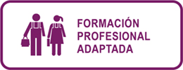
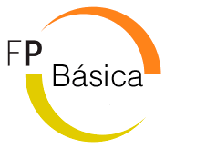

Formación Profesional Adaptada / Formación Profesional Básica.
La formación profesional en España está organizada en el plano educativo a partir de la LOGSE en 1990 con aportaciones posteriores como la creación de Formación Profesional Dual en 2012. Los Ciclos Formativos contienen en su currículo diversos módulos profesionales (asignaturas) de carácter teórico-práctico y se completan con el módulo de Formación en Centros de Trabajo (FCT). Estos ciclos se incorporan a través de la LOMCE en 2013. Estan dirigidos a alumnos que no han completado previamente la Educación Secundaria Obligatoria. Los ciclos ofertados en este centro son:
| Nombre del ciclo | Salidas profesionales |
|---|---|
| PFPA Agrarias - Actividades Auxiliares en Viveros, jardines y centro de jardineria (LOE). |
|
Haga click aquí ➟
Programa de Formación Profesional Básica (CFFPB).
| Nombre del ciclo | Salidas profesionales |
|---|---|
| Transporte y Mantenimiento de Vehículos - mantenimiento de Vehículos (LOE). |
|
| Madera, mueble y corcho - Carpintería y Mueble. |
|
Haga click aquí ➟
